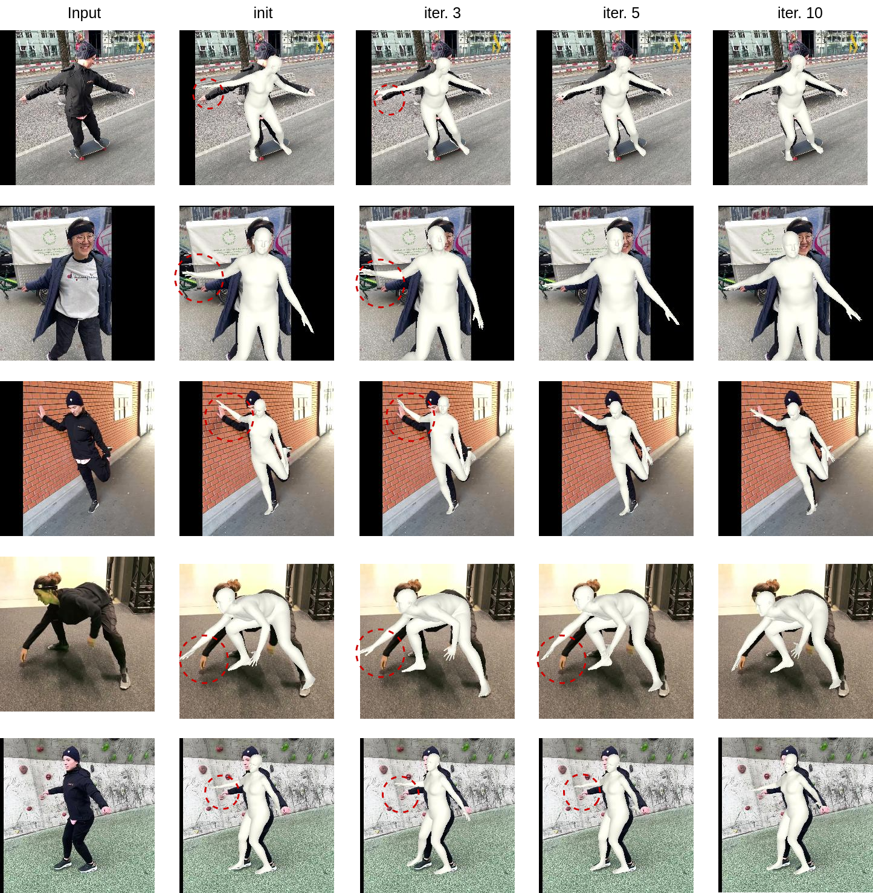

GenHMR: Generative Human Mesh Recovery
(AAAI 2025)
Muhammad Usama Saleem , Ekkasit Pinyoanuntapong, Pu Wang, Hongfei Xue, Srijan Das, Chen Chen†
For any inquiries, please email to: msaleem2@charlotte.edu
Abstract
Human mesh recovery (HMR) is crucial in many computer vision applications, from health to arts and entertainment. HMR from monocular images has predominantly been addressed by deterministic methods that output a single prediction for a given 2D image. However, HMR from a single image is an ill-posed problem due to depth ambiguity and occlusions. Probabilistic methods have attempted to address this by generating and fusing multiple plausible 3D reconstructions, but their performance has often lagged behind deterministic approaches. In this paper, we introduce GenHMR, a novel generative framework that reformulates monocular HMR as an image-conditioned generative task, explicitly modeling and mitigating uncertainties in the 2D-to-3D mapping process. GenHMR comprises two key components: (1) a pose tokenizer to convert 3D human poses into a sequence of discrete tokens in a latent space, and (2) an image-conditional masked transformer to learn the probabilistic distributions of the pose tokens, conditioned on the input image prompt along with randomly masked token sequences. During inference, the model samples from the learned conditional distribution to iteratively decode high-confidence pose tokens, thereby reducing 3D reconstruction uncertainties. To further refine the reconstruction, a 2D pose-guided refinement technique is proposed to directly fine-tune the decoded pose tokens in the latent space, which forces the projected 3D body mesh to align with the 2D pose clues. Experiments on benchmark datasets demonstrate that GenHMR significantly outperforms state-of-the-art methods. GenHMR significantly outperforms state-of-the-art methods.
Video Demos
The GenHMR demo highlights our method for achieving accurate 3D human mesh reconstructions from monocular images. Key to our approach is Uncertainty-Guided Sampling (UGS), which iteratively samples high-confidence pose tokens based on their probabilistic distributions, ensuring precise and reliable 3D reconstructions. All the demos here are from UGS stage.
Chasing
War
Race
Avatar
Biking
Ski Long Jump
Street Skating
Soccer
Group Ski
Football
Long Jump
Javelin Throw
Basketball
Ski
Gymnast
Dance
Ice Skating
Tennis
GenHMR Training Phase
GenHMR consists of two key components: (1) a Pose Tokenizer that encodes 3D human poses into a sequence of discrete tokens within a latent space, and (2) an Image-Conditioned Masked Transformer that models the probabilistic distributions of these tokens, conditioned on the input image and a partially masked token sequence.

Our Inference Strategy
Our inference strategy comprises two key stages: (1) Uncertainty-Guided Sampling, which iteratively samples high-confidence pose tokens based on their probabilistic distributions, and (2) 2D Pose-Guided Refinement, which fine-tunes the sampled pose tokens to further minimize 3D reconstruction uncertainty by ensuring consistency between the 3D body mesh and 2D pose estimates.

State-of-the-Art Comparison
State-of-the-art (SOTA) methods, such as HMR2.0 and TokenHMR, utilize vision transformers to recover 3D human meshes from single images. However, the limitations of these SOTA approaches, particularly in dealing with unusual poses or ambiguous situations, are evident in the errors marked by red circles. Our approach, GenHMR, addresses these challenges by explicitly modeling and mitigating uncertainties in the 2D-to-3D mapping process, leading to more accurate and robust 3D pose reconstructions in complex scenarios.

Qualitative Results on Challenging Poses
Qualitative results of our approach on challenging poses from the LSP dataset. Here, results are directly from Uncertainty-Guided Sampling (UGS).

2D Pose-Guided Refinement
The effect of 2D Pose-Guided Refinement on 3D pose reconstruction. The red circles highlight error-prone areas after each refinement iteration, demonstrating how the method progressively corrects these errors. By fine-tuning the pose tokens to better align the 3D pose with 2D detections, our approach iteratively reduces uncertainties and enhances accuracy. Notable improvements are observed in the early iterations, with most errors significantly reduced by the 10th iteration. The initial mesh is derived from uncertainty-guided sampling.
More Results on Challenging Pose
This figure showcases qualitative results of our GenHMR model on challenging poses. These results demonstrate the model's ability to accurately reconstruct complex 3D poses even in scenarios further highlighting the robustness and effectiveness of our approach. Here, results are from UGS stage.